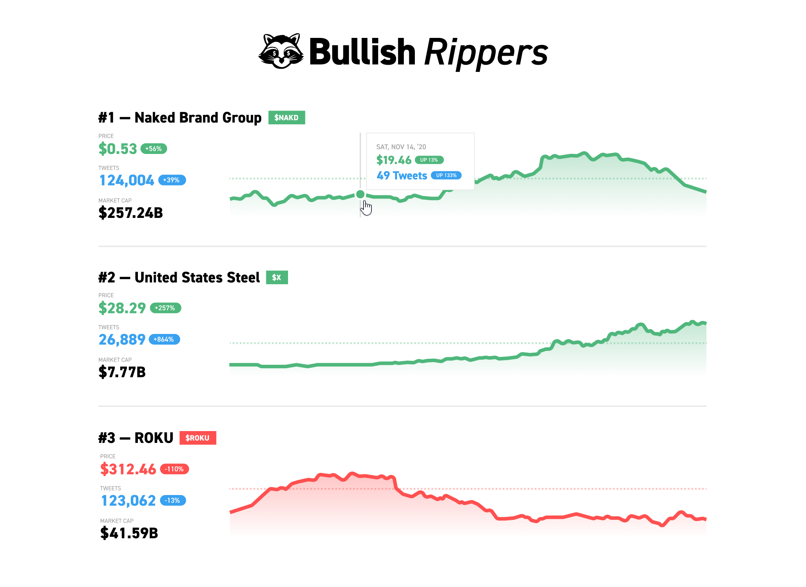
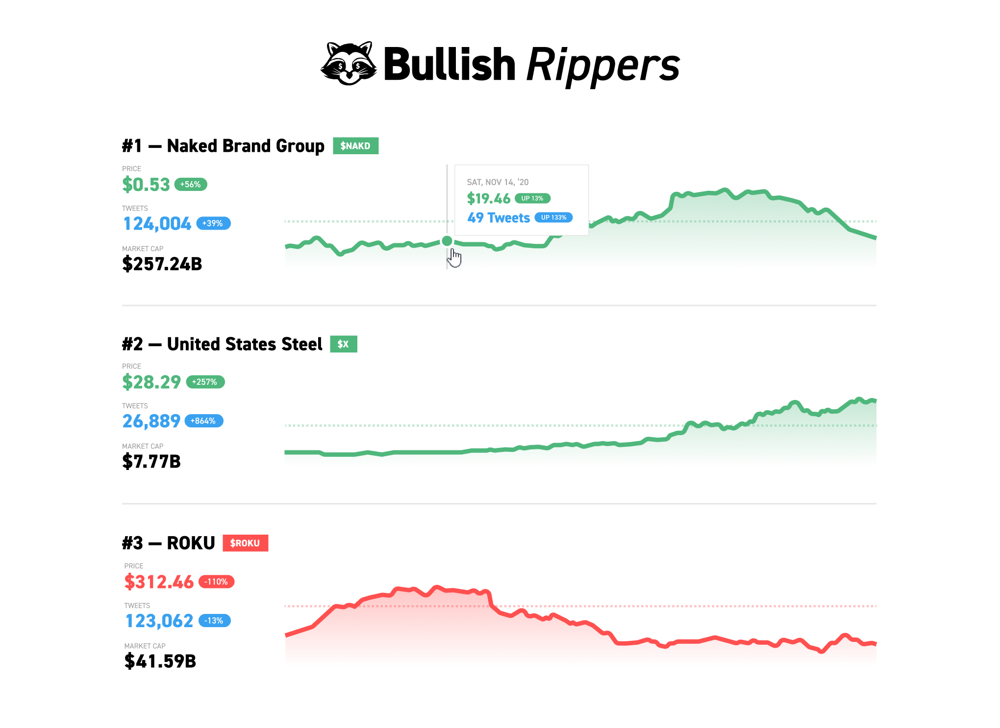

Senior UI/UX Designer at Web Advisors with 6 years of experience.
Z-AXIS
Lead UI/UX Designer — swingfall.com
Swing-fall protection monitoring mobile app currently being used by Boeing.
The Brand
In addition to building an entire 200+ wireframe design system from the ground up, I was tasked with designing the logo. It was important to have a logo that was scalable, and had the defining features, colors, look, and feel of what the Z-AXIS Radian encompasses.
Content First
When being tasked to design a user interface for situations in which peoples lives were on the line, it was important for the design to convey as much visual simplicity as possible, I like to follow the philosophy of "content first" because it is the order in which content is displayed that is the most important to the needs of the end-user.
Onboarding
All users are required to go through an onboarding setup process in which they log all information needed in cases of emergency. It's quite the lengthy process which is why it was crucial to add aspects of gamification, leading the user step-by-step, visualized by blue navigation dots.
My Role
At DRYNKS, I was responsible for building the entire design system from scratch. I managed user-flows, interaction models, and sitemaps to resolve painpoints, allowing users to more effectively find romantic partners.

The leadership team at DRYNKS made it clear from the start that it's not a swipe-like dating app, instead, we had to figure out a way to create a design system in which viewing multiple profiles, requesting dates, virtual dates and chats was all possible on one page.

Advertising Design
In addition to UI/UX, I was tasked to design advertisements for both billboard and web use. I came up with the visual themes and illustrations and was provided ad verbiage from the leadership team.
Bullish
UI/UX Designer — bullish.studio
Designed and implemented new style guides in Figma. Worked on-on-one with end-users to find pain-points and improve the user experience through my design changes.
Figma, HTML, CSS implemented into React/Next.JS framework.
 



Strictly
Deliveries
UI/UX Designer — Contract for Client
Worked as a solo designer one-on-one with client to build a brand from the ground up with
fully
flushed out design guidelines, logos, colors, fonts, etc.
All mock-ups made in Figma, not yet realized into a full concept.


GO-OFF
UI/UX Designer — go-off.co
Worked closely with a small team of developers to revamp the UI/UX to create an
easier-to-use
platform for the user.
Figma, HTML, CSS, and JavaScript

hyperbot
UI/UX Designer — Personal Project
Fully designed a sneaker bot that was developed over the course of a summer with a friend.
Constructed logos, created design guidelines and converted designs to code.
Figma, HTML, CSS, JavaScript (integrated designs with Electron.JS)


wave.ac
UI/UX Designer — wave.ac
Helped a small team of React.JS developers revamp their user interface and design.
Figma, HTML, CSS